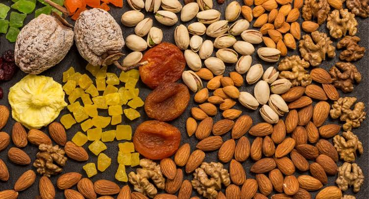
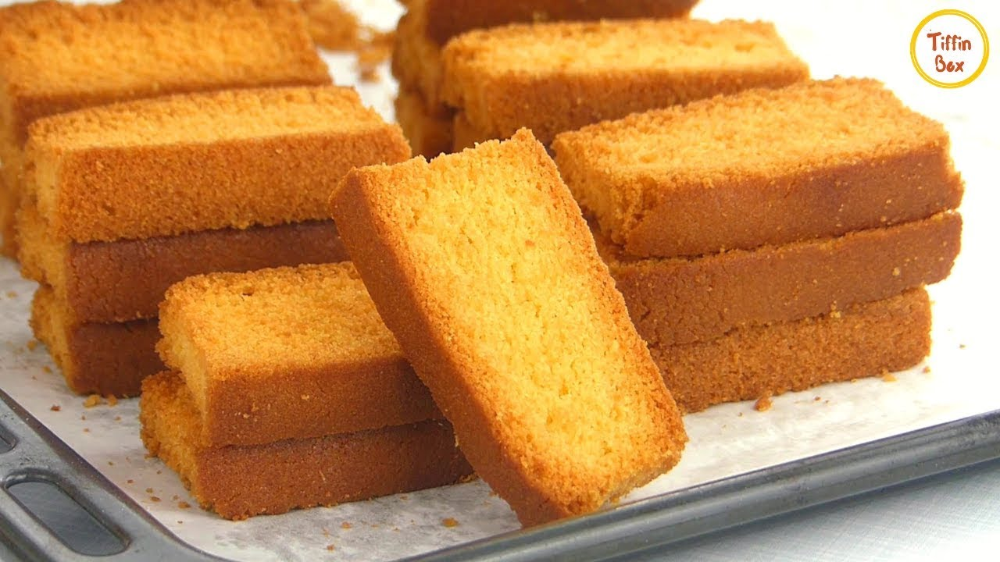

Dry foods can be divided into two main types:
Dry fruits are healthy snacks packed with vitamins, minerals, and fiber, making them a great source of quick energy. They are best enjoyed between meals, as they can help curb cravings without fatal digestion. However, because they are calorie-dense, it is important to eat them in moderation; about a small handful per day. Some varieties may have added sugars, so it's wise to check labels for healthier options.
While dry fruits offer many benefits, consuming too many can lead to weight gain or spikes in blood sugar due to their concentrated sugars. The ideal time to enjoy dry fruits is as a snack, especially when paired with nuts for a balanced boost of protein and healthy fats. Always store them properly to keep them fresh.
Dry cakes, like pound cake and fruitcake, are convenient snacks that can be enjoyed anytime. They are firmer and less moist than regular cakes, making them easy to store and transport. While they can be tasty and satisfying, it’s important to enjoy them in moderation, as they often contain added sugars and fats, which can contribute to weight gain if consumed excessively.
The best time to enjoy dry cakes is as an occasional treat or dessert, especially with a cup of tea or coffee. Pairing them with fruit or yogurt can enhance their nutritional value. While they can be a fun addition to your diet, be mindful of portion sizes to maintain a balanced diet and avoid overindulgence. Always check the ingredient list for healthier options without too many additives or preservatives.
